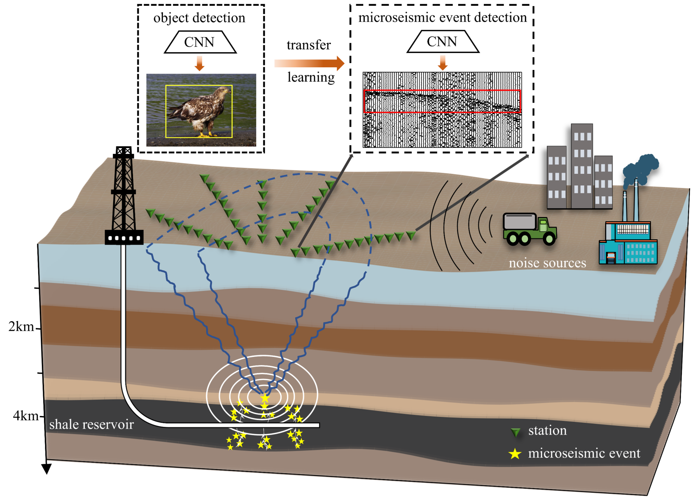
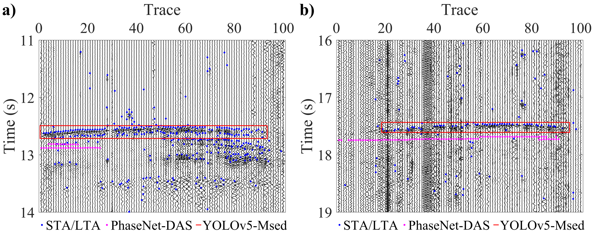

随着页岩气勘探开发逐渐向深部地层拓展，水力压裂过程中产生的微地震信号更加微弱，复杂的地表噪声环境给微地震事件的准确检测带来了较大挑战。传统单台站检测方法容易受到局部噪声干扰，而现有部分深度学习方法主要依赖合成数据或单台站记录进行训练，在复杂野外环境中的检测能力仍受到限制。
成都理工大学地震研究中心梁春涛教授研究团队针对上述问题，提出了一种基于计算机视觉迁移学习的实时多台站微地震事件检测方法（YOLOv5-Msed）。该方法将连续多台站地震波形转换为灰度图像，利用目标检测网络自动识别微地震事件，并通过迁移学习提高模型对野外复杂噪声环境的适应能力（图1）。研究团队基于四川盆地页岩气压裂区10条测线、952个检波器的地表观测数据，构建了包含19,960个标注事件样本的数据集。
研究结果表明，该方法能够有效识别低信噪比条件下的微地震事件，显著降低局部噪声引起的误检。相比单台STA/LTA，误检大幅减少（图2）；与PhaseNet-DAS相比，所提出方法的F1分数由0.37提高至0.98。在距离训练区域约12 km的另一口压裂井实测数据中，检测精确率和召回率分别达到98.32%和97.02%，处理速度达到每秒100帧，具备实时微地震监测能力。该成果为复杂噪声环境下的微地震自动检测及页岩气水力压裂实时监测提供了新的技术手段。
以上研究成果发表于国际地球物理学期刊《Geophysical Journal International》。论文第一作者为成都理工大学地球物理学院博士研究生谢春兰，通讯作者为成都理工大学地球物理学院王朝亮副研究员。该研究得到了国家自然科学基金（42174071）、国家重点研发计划（2022YFF0800601）和四川省重点研发计划（2023YFS0433）的资助。

